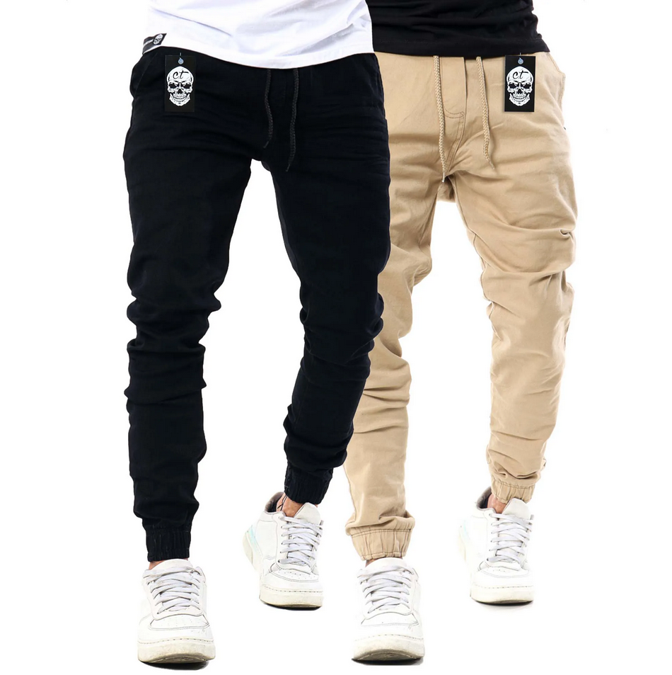
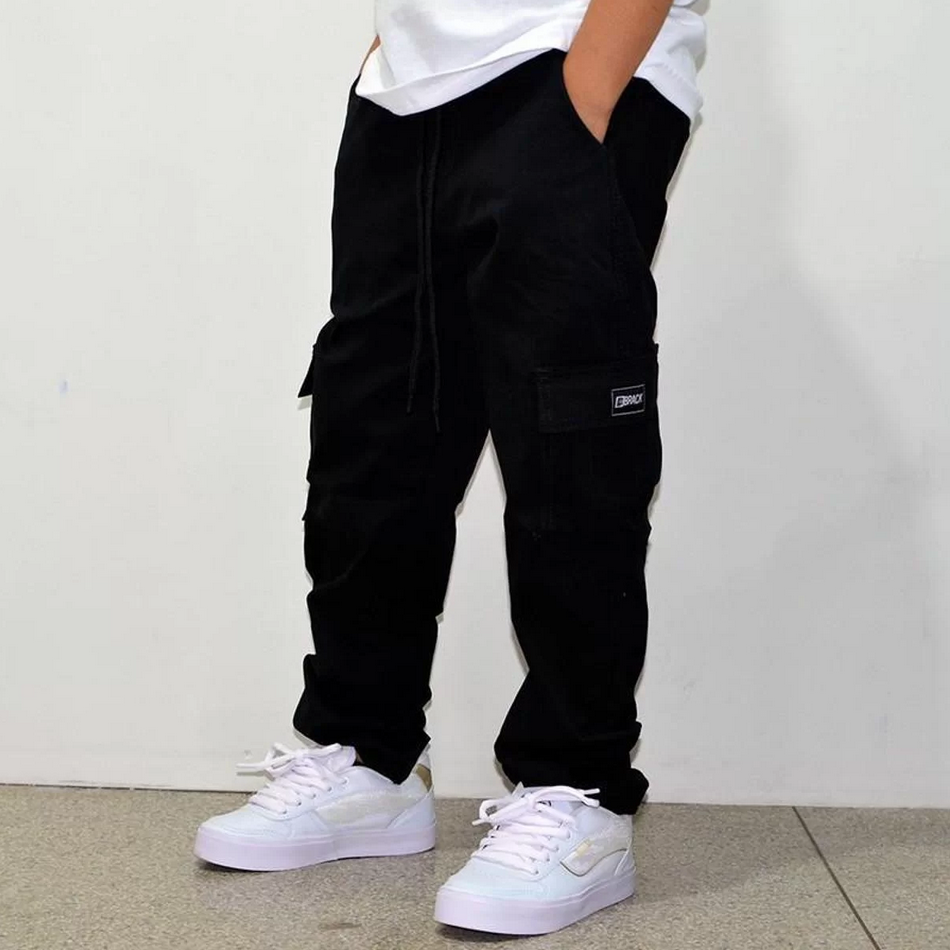
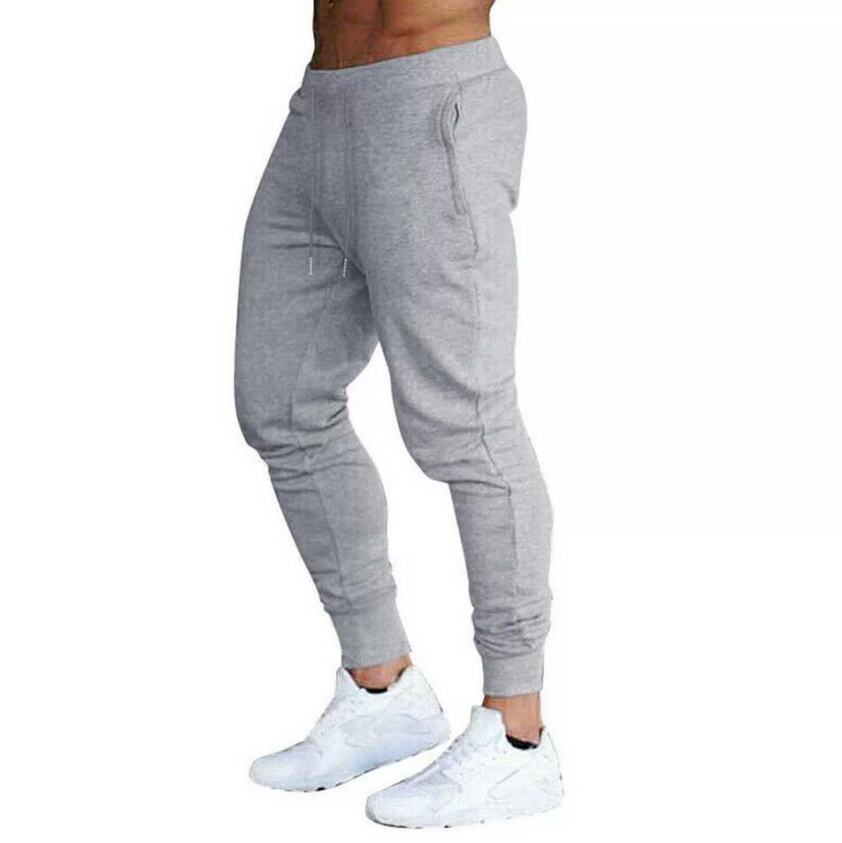
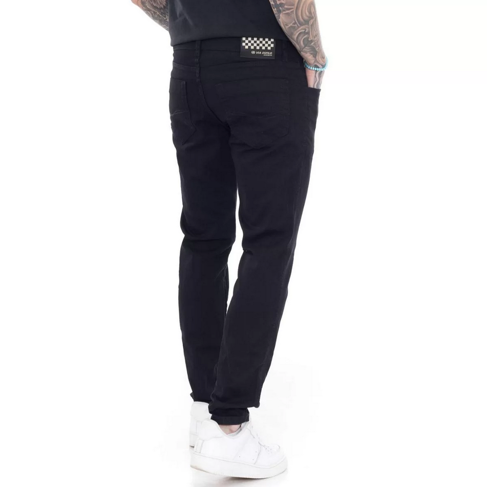
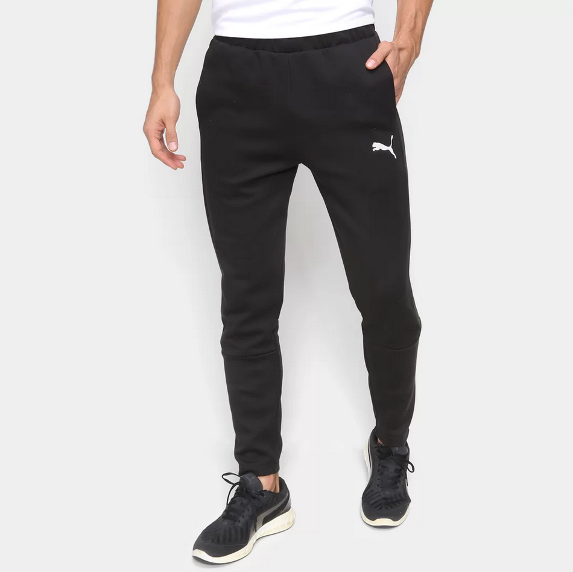
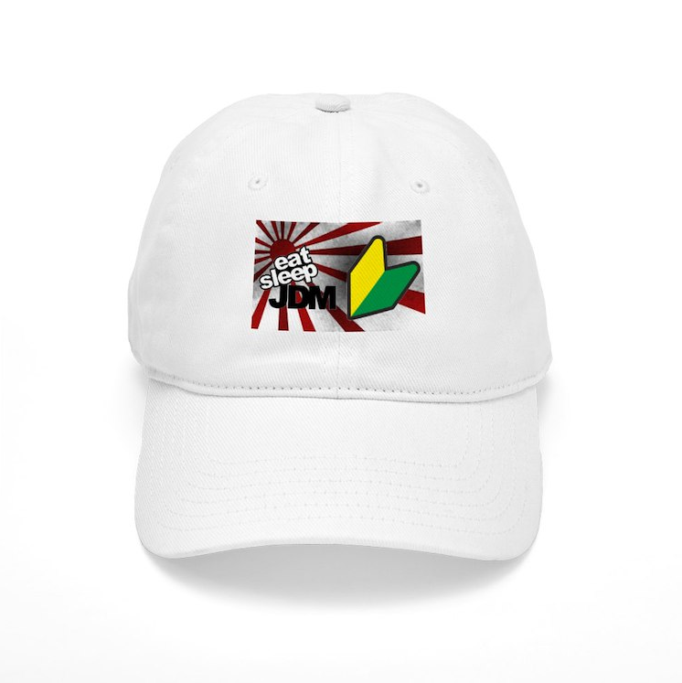
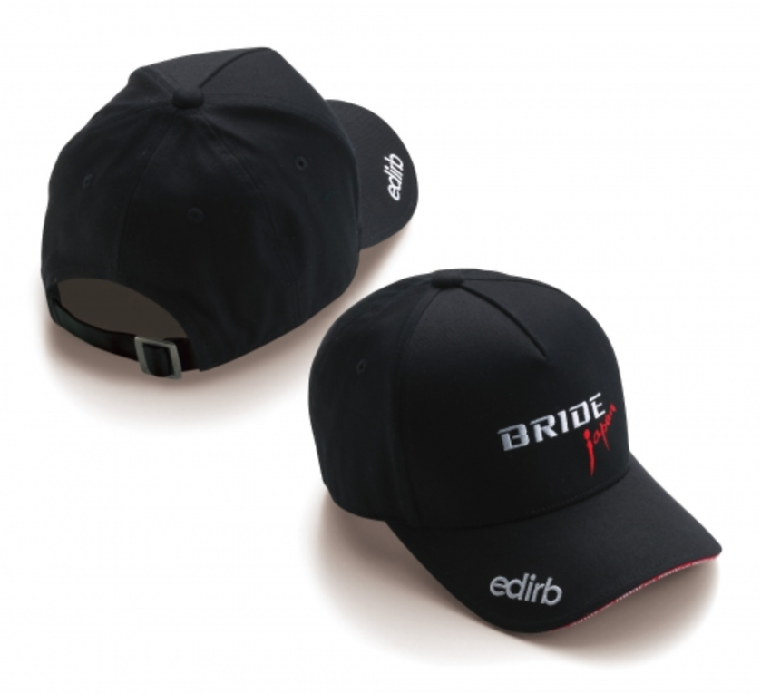
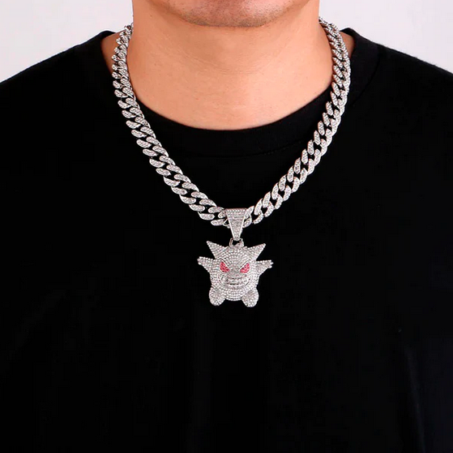
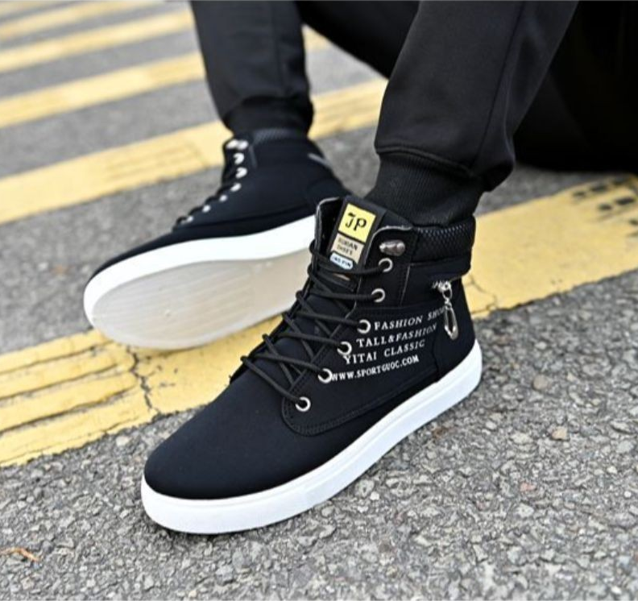
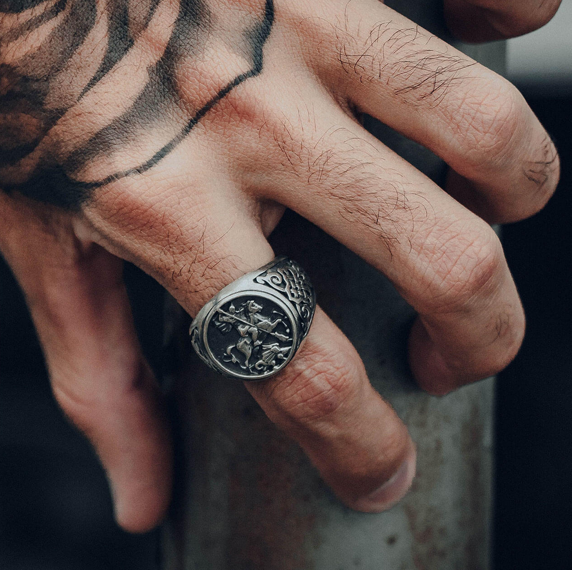

Quem já acelerou nos games sabe muito bem, JDM significa “Japanese Domestic Market” ou, na tradução livre, “carro do mercado doméstico japonês”.
Portanto, é um tipo de personalização automotiva muito comum no Japão e que rompeu as barreiras para outros cantos do mundo.
Assim como acontece nos Muscle cars e no Eurolook, os seguidores do estilo JDM focam seus esforços em reforçar a potência dos carros e ampliar a experiência de pilotagem, sem deixar de lado o lado estético.
O estilo JDM é realmente único e teve seu auge no meio dos anos 2000 até a década passada com os filmes Velozes e Furiosos e os games Need For Speed e Mid Night Club, este último protagonizado no Japão em referência a um clube de rachadores locais.
A essência dos modelos JDM vem dos veículos de fabricação japonesa, pois o patriotismo do público japonês em relação aos automóveis é enorme.
Mas o JDM style não foca apenas nos carros, mas a estética que ele representa também se abrange a música e também a moda, que vamos nos aprofundar neste blog.
A estética japonesa está quase sempre presente nas peças do estilo JDM, junto com referências de carros, peças, estradas, e até animes japoneses que se encontram nesse estilo.
Para as pernas, não existe bem um estilo específico, porém existem modelos que combinam, como calças jogger, moletoms, calças cargo e Jeans preto.
    Na questão dos acessórios, é muito comum o uso de bonés, correntes, anéis, e clato algumas botas ou tênis de cano alto
    